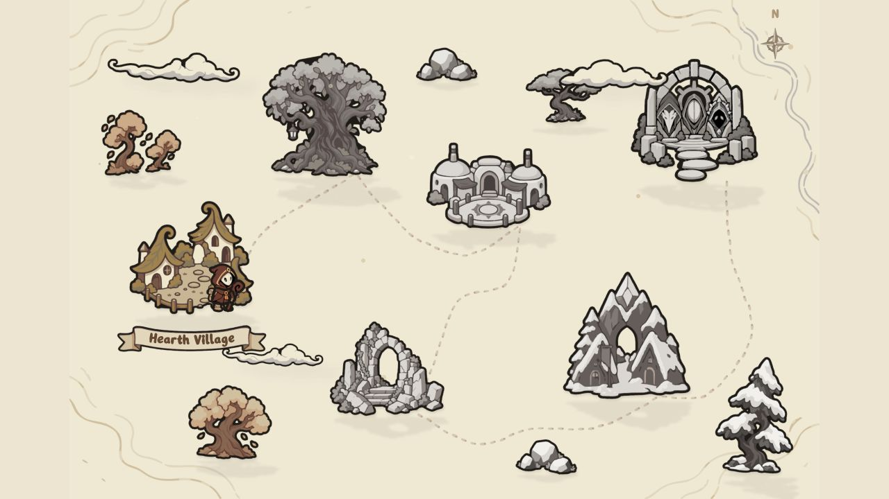
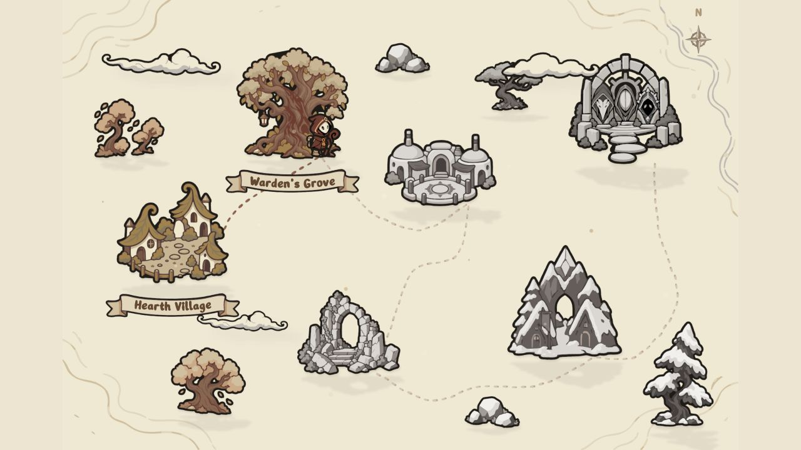

Headed in-app browser, 2160x1440 drawing buffer; 60 warm-up + 90 measured frames per phase. Full, no-shadows, no-grading, full. Same scene counts as the prior diagnostic, except zero live outline segments. GPU timer values span two contending contexts and must not be added.
| Phase | Mean ms | p95 | p99 | Max | Frames >50ms |
|---|---|---|---|---|---|
| 0: all | 19.07 | 33.50 | 34.30 | 34.30 | 0 |
| 1: no-shadows | 19.08 | 33.40 | 33.50 | 34.30 | 0 |
| 2: no-grading | 16.67 | 17.60 | 17.70 | 17.70 | 0 |
| 3: all | 18.52 | 33.30 | 33.50 | 34.30 | 0 |
Earlier diagnostic: 113.70 ms/frame with live outlines, 20.19 with only those outlines disabled. See baseline JSON; different host load prevents a precise speedup claim.
16 focused tests passed. 43/43 assets reused on the second bake. Map bundle excludes the live outline shader. Preview and server stopped after validation.

